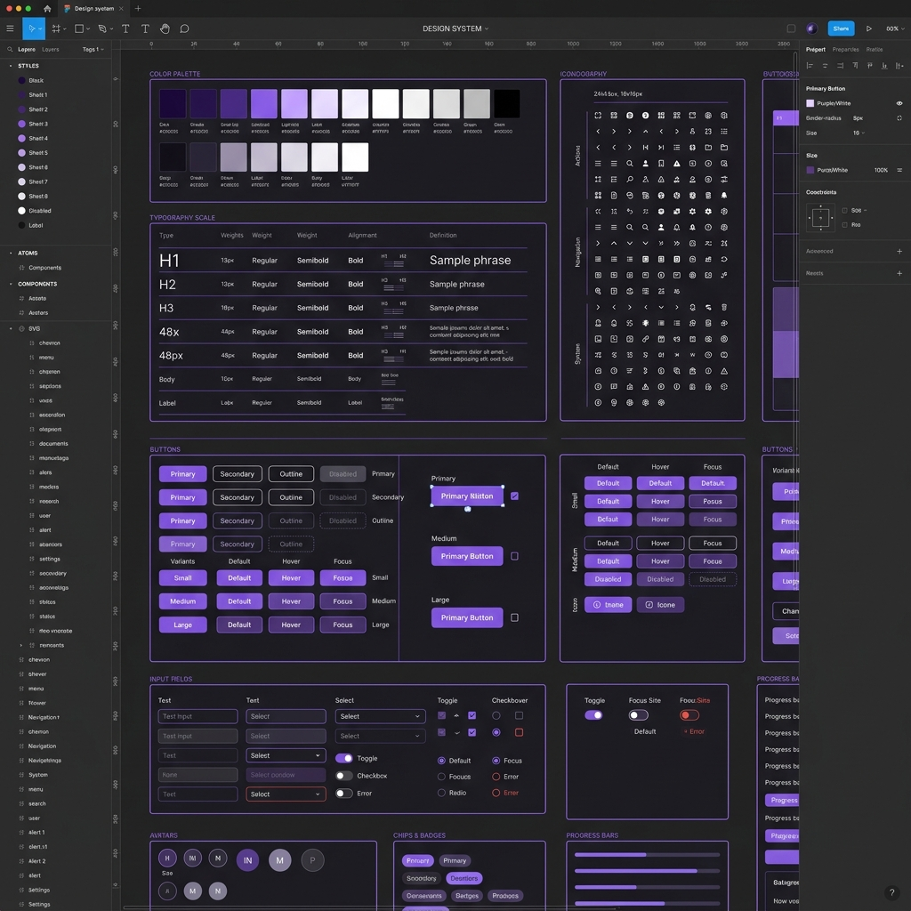
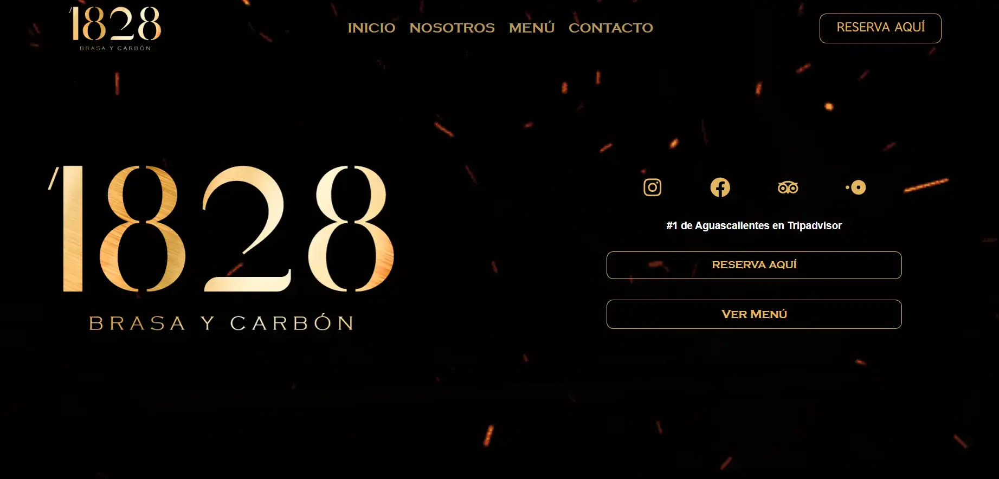

Atomic Design System: AI-Driven Productivity
"Construí una librería de componentes escalable que estandariza la UI y reduce el tiempo de desarrollo mediante variables semánticas."

Context
As the product team grew, design inconsistencies and repetitive tasks started slowing down development. A unified source of truth was needed to ensure visual consistency across all touchpoints.
The Problem
Developers were hardcoding colors and spacing, and designers were recreating similar components over and over. This friction resulted in a "Frankenstein" UI and delayed product launches.

The Solution
Built a comprehensive Atomic Design System in Figma, utilizing nested components, auto-layout, and semantic variables to ensure complete scalability.
- Token Architecture: Mapped core variables (Colors, Typography, Spacing).
- Component Library: Created fully responsive, stateful components.
- AI-Assisted Ops: Used AI to generate comprehensive component documentation.
Design Ops Mastery
1:1 Mapping
Every Figma token maps directly to a CSS/React variable for seamless integration.
Dark/Light Variables
Implemented nested variable collections to switch themes instantly without redesigning.
Team Onboarding
Wrote the playbook for how other designers consume and contribute to the library.
Results
Reduced design-to-development handoff time by 40%. The system established a shared language between disciplines, drastically lowering QA bugs related to UI inconsistencies.